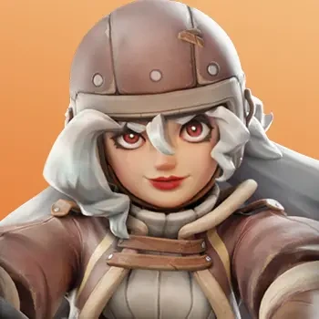
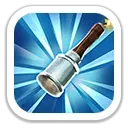
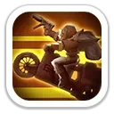
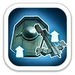
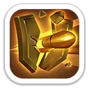
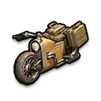
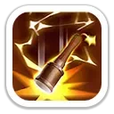

Заградительный огонь
Обрушивает каскад из 5 гранат по случайной цели, сначала по героям, нанося урон по области в размере 60%/66%/72%/78%/84% атаки.

Контроль · усиление пехоты и стрелков · универсальный PvP
Нора — мифический герой-копейщик 5 поколения с сильным сочетанием контроля, усиления союзных типов войск и темповых эффектов. Она особенно хорошо раскрывается в PvP и Арене, где гранаты дают контроль, а походные навыки одновременно повышают урон и снижают входящий урон.
Максимальные значения героя для 5 поколения.
Навыки, которые работают в Освоении и на Арене.
Обрушивает каскад из 5 гранат по случайной цели, сначала по героям, нанося урон по области в размере 60%/66%/72%/78%/84% атаки.

Наносит 50%/55%/60%/65%/70% атаки и оглушает цель на 1,5 секунды.

Повышает атаку всех войск на 3%/3.5%/4%/4.5%/5%.
Ключевые эффекты для маршей, сборов, гарнизона и массовых боёв.

Для пехоты и стрелков снижает получаемый урон на 3%/6%/9%/12%/15% и одновременно повышает наносимый урон на 3%/6%/9%/12%/15%.

Даёт 20% шанс при атаке нанести всем врагам 20%/40%/60%/80%/100% дополнительного урона.
Каждые 5 атак копейщиков на 2 хода повышает наносимый всеми войсками урон на 5%/10%/15%/20%/25% и снижает получаемый ими урон на те же 5%/10%/15%/20%/25%.

Максимальные характеристики: +999 атаки героя · +999 защиты · +9 990 здоровья · +111% смертоносности · +111% здоровья войск.

Серия гранат и оглушение делают Нору сильным контроллером и источником урона по площади.
Один из самых универсальных героев поколения: одновременно усиливает урон и выживаемость.
Эксклюзивное снаряжение повышает защиту обороняющихся войск до +15%.
Может быть полезна при высокой прокачке, но её первый походный навык усиливает именно пехоту и стрелков, а не одинаково все типы войск.
Сильный второй выбор 5 поколения. Нора особенно хороша для PvP и обороны, но игроку без покупок разумнее сначала закончить Гектора.